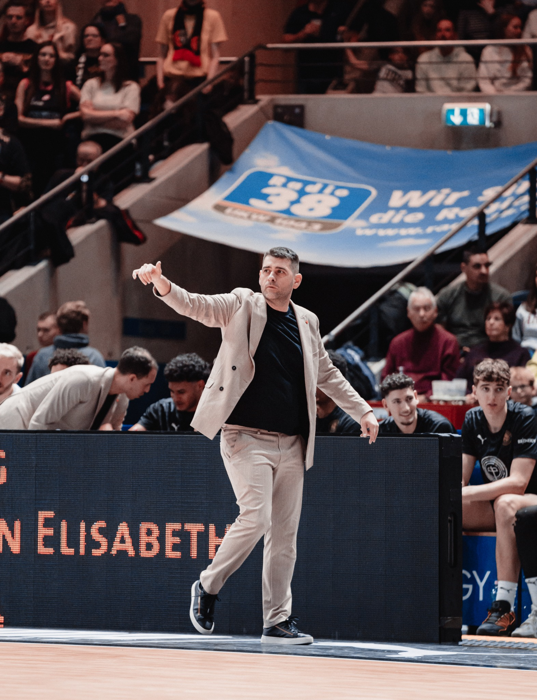
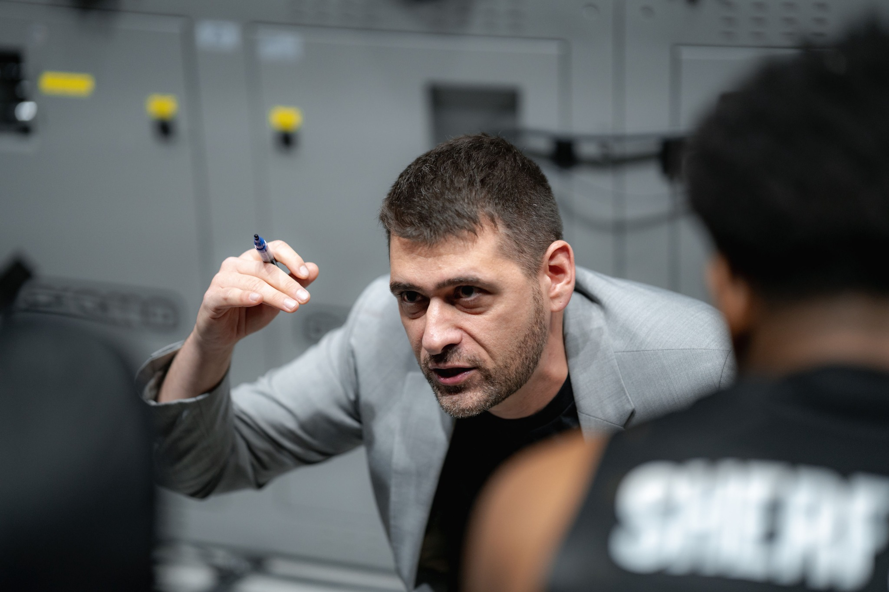

PUBLIC PRESENCE
Media, Interviews & Game Video
Selected games
Video room
A selection of full games from the BBL and FIBA Europe Cup, including the 2025/26 season. These links are included so my coaching work can be viewed in context.
- Braunschweig vs PAOK — FIBA Europe Cup 2025/26Full game.
- PAOK vs Braunschweig — FIBA Europe Cup 2025/26Full game.
- Braunschweig vs Anwil — FIBA Europe Cup 2025/26Full game.
- Braunschweig vs Bonn — BBL 2025/26Full game on Dyn; subscription may be required.
- Braunschweig vs Rostock — BBL 2025/26Full game on Dyn; subscription may be required.
- Braunschweig vs RASTA Vechta — BBL 2025/26Full game on Dyn; subscription may be required.
Interviews & media
Media & Interviews
Selected interviews, podcasts and media appearances featuring my work and perspective on basketball.
- SPORT FM — Dennis Schröder: “He Believed He Was Going to the World Cup to Win Gold”Written interview · Greek sports media · 2023 FIBA Basketball World Cup.
- STADTGLANZ — “Erst Co, jetzt Kopf” (From Assistant Coach to Head Coach)Written feature interview · German · 16 April 2026 · Interview by Stefan Boysen. On the transition from assistant coach to Head Coach, coaching philosophy, team development and leadership at Basketball Löwen Braunschweig.
- BBL — Pregame Interview Ahead of a BBL GamePregame video interview · YouTube Short.
- GBL — Kostas Papazoglou: “Difficult Moments Are What Help You Grow Most as a Coach”Podcast (in Greek) · Official Stoiximan GBL podcast, Man to Man powered by Stoiximan.
Coaching photography
On the court & on the sideline

Image unavailable
Courtside direction

Image unavailable
Timeout preparation

Image unavailable
Team communication

Image unavailable
Game-day leadership